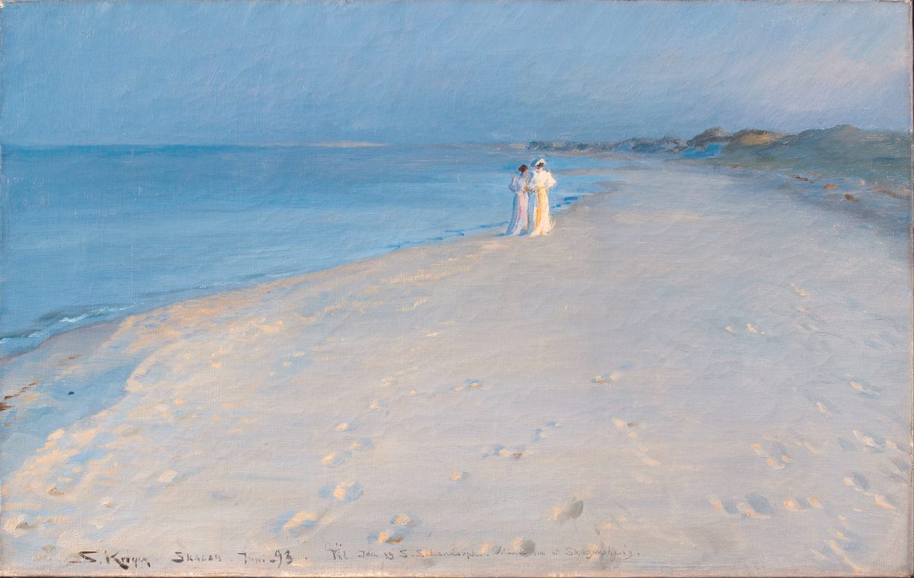
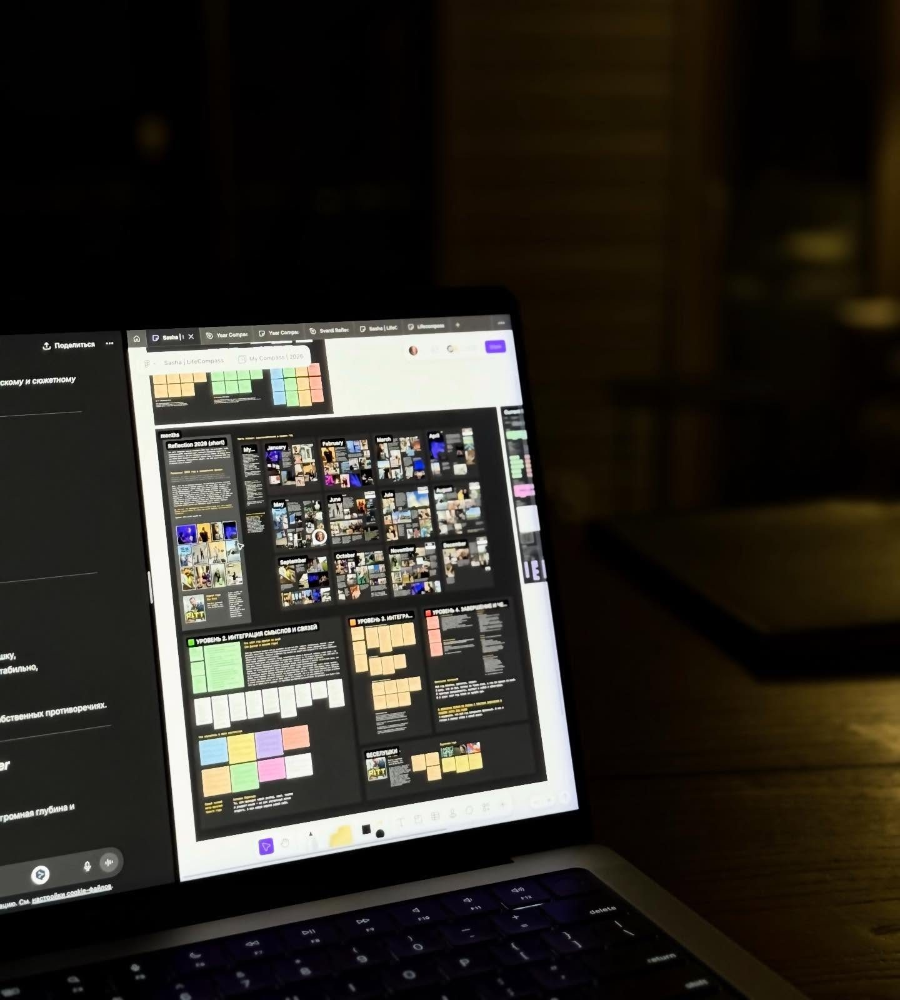

Спокойно увидеть свой год и выбрать, куда дальше
Две встречи онлайн в группе: в конце декабря смотрим на прошлый сезон, в начале января выбираем два-три фокуса на следующий, и итог одной страницей остаётся у тебя.
- Когда
- конец декабря и начало января, точные даты позже
- Формат
- две встречи онлайн по два часа, группа до 15 человек
- Цена
- 60 € за обе встречи, оплата — когда появятся даты
Напиши, и я добавлю тебя в список ожидания; платить сейчас ничего не нужно. Можно просто отправить: Привет! Хочу в список ожидания «Нового сезона». Напиши, когда появятся даты.

Что обычно ломается с итогами года
В конце прошлого года, перед первыми такими встречами, я больше десяти раз созванивалась с людьми и расспрашивала, как они подводят год. Мне рассказывали, что записанное в декабре забывается за месяц, что шаблоны итогов разрастаются до тридцати листов, а вопросы в них повторяются, и что даже после итогов висит вопрос «и что теперь с этим делать?». Когда я спрашивала, чего хочется от итогов, чаще всего отвечали: чтобы стало спокойно и было понятно, куда дальше.
…в планы на следующий год, и я такой воодушевлённый хожу. А через месяц я вообще забываю об этом.
К пятому-шестому вопросу я уже исписала по нескольку страниц А4, а спрашивается там всё то же самое, только более детально.
Написано хорошо, но мало написать.
Я очень верю в систему, я просто не умею её выстроить.
Мои планы крутятся вокруг работы, меня в этом планировании нету.
Понять: всё, что я сейчас делаю или собиралась делать, — это всё ещё про меня, или мне это уже не подходит.
Почему я это делаю

Свой день рождения в декабре 2025-го я провела одна в доме посреди поля: четыре дня без соцсетей и почти двадцать часов рефлексий. Свела итоги года, записала, где я «сейчас», и начала обрисовывать образ следующего. Когда всё было выложено из головы, внутри стало тихо и спокойно.
Да, вот зачем это нужно: ощущать непрерывность своей жизни и жить не вчера и не завтра, а прямо сейчас.
Ровно за этим я и зову на «Новый сезон».
Две встречи
Встреча 1 · конец декабря
Раскладываем события по месяцам и собираем год в одну картину: каким он начался и каким заканчивается, три момента, которые вспомнятся через пять лет, урок года одной фразой и за что себя похвалить. Когда я раскладываю свой год по месяцам, каждый раз удивляюсь, сколько в нём всего было, хотя по ощущению он пролетел.
Я думал, что какой год, вообще суперсложный. А когда я сделал ретро года и посмотрел, думаю: вау, офигенный год вообще.
Встреча 2 · начало января
Смотрим на сферы жизни «как сейчас», задаём по каждой один вопрос на год, который начинается со слов «получится ли», и выбираем два-три фокуса, чтобы не распыляться на тысячу разных штук. Потом намерения, состояние, в котором хочется жить, и чему в этом году говоришь «да», а чему «нет». Плана по месяцам здесь не будет.
Намерение — гораздо более приятное слово, чем планирование. Оно меня ни к чему не обязывает.
Почти всё время ты пишешь для себя; поделиться можно в тройке, несколько минут. Где и как работаем, покажу на встрече. У каждой части своё время на таймере. ИИ — только если захочешь, без него всё тоже работает.
Итог одной страницей ты собираешь по ходу встреч и забираешь сразу: год одной фразой, три его момента и урок, два-три фокуса с вопросами на год, состояние, «да» и «нет». Его удобно держать под рукой. На второй встрече ты выбираешь дату, когда открыть его снова. Перечитать — минут пятнадцать: отметить, что сделано, что отпало и что ещё живо. Запись встречи и другие важные материалы я пришлю на следующий день.
Не всё решено, но всё понятно.
Как было в прошлый раз
В январе 2026-го я провела эти встречи для сообщества предпринимателей: две встречи онлайн, на каждой было 15–20 человек.
«Я несколько раз уже пытался заняться итогами года и планами… После двух сессий главное изменение — хочется дальше теперь этим заниматься.»
«Я как-то дожил до 40 лет без этих планов, без подведений итогов… А здесь даже за эти два часа родилось много идей, что я действительно хочу это сделать.»
«Я видела, что приоритеты немножко по-другому звучат, и это было ценно.»
«Два часа пролетают незаметно… Ощущение такой лёгкой незавершённости, и хочется в этом покопаться.»
«Вот есть ключевая точка… она передо мной настолько ясная.»
Веду встречи я, Саша Свердловская.
Условия
- Цена
- 60 € за обе встречи
- Встречи
- две по два часа, онлайн; приходить нужно на обе
- Группа
- не больше 15 человек
- Даты
- конец декабря и начало января, точные даты позже
- Когда платить
- когда объявлю даты; до этого ты просто в списке ожидания
- Оплата
- в евро или в рублях; если ты в России, напиши, договоримся
- Возврат
- если отменить не позже чем за две недели до первой встречи; позже деньги не возвращаются
Напиши мне в Telegram, и я добавлю тебя в список ожидания. Платить сейчас ничего не нужно: когда появятся даты, напишу один раз. Можно просто отправить: Привет! Хочу в список ожидания «Нового сезона». Напиши, когда появятся даты.
Частые вопросы
Я каждый год бросаю итоги на середине.
Здесь вопросов меньше, они не повторяются, и у каждой части своё время. Что не успелось, можно дописать потом: итог остаётся у тебя, а запись встречи я пришлю на следующий день.
Можно прийти только на одну встречу?
Нет, встречи идут парой: на первой смотрим на прошлый год, на второй выбираем, куда дальше. Записываться стоит, когда свободны оба дня.
Не люблю расписывать год по датам.
Дат и сроков здесь нет: фокусы, вопросы на год и состояние, в котором хочется жить. Если нравится измеримое, к фокусу можно добавить свой знак, по которому станет видно, что получилось.
Мне трудно открываться в группе.
В тройке делишься только тем, чем хочется, а можно сказать «пропускаю».
А если год был тяжёлый?
Мне кажется, после тяжёлого года особенно хочется скорее его отпустить, и всё же сначала мы просто смотрим, что в нём происходило, без оценок. Это не терапия: если сейчас совсем тяжело, начать стоит с врача или психолога.
Если в работе что-то закончилось и нужно больше, чем две встречи, — есть «Переход». Как устроен «Переход» →